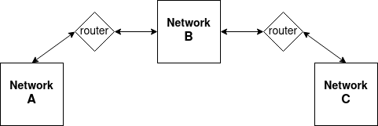

Tues December 27, 2022.
Back To Articles
Now that we have some familiarity with network namespaces, and understand that they allow us to create completely isolating network devices from other namespaces on the same system, we can make use of these namespaces to create a virtual network. The first thing we need to do, however, is to design what our network is going to look like. We want something simple, yet also something which at least has enough complexity to produce interesting cases for everything we want to do.
I've settled on a network that is actually comprised of 3 separate networks. These networks will be connected by some routers. Here's the high-level plan.
So, we will have network A and B connected by a router directly, and then network B and C connected by a router directly. Networks A and C are connected, but indirectly - they require passing through network B to reach one another.
The next step is to translate this diagram to a plan for how to implement this with namespaces on a single machine. Well, since the point of a namespace is to act as though it is its own private machine, completely distinct and isolated from the rest of the system, we can easily think of a namespace as representing a machine in the network. So, we need a namespace for each host in the network as well as a namespace for each router, since the hosts and routers constitute all the machines on the network. We are going to give network A two hosts, and then networks B and C will each have one host.
In addition to this, we also need to assign ip addresses to all of the machines on the network. The IPv4 protocol specifies a couple groups of addresses as being private or local addresses, which means they should never be used as public ip addresses on the internet and should always refer to local devices on your own machine. We might as well assign addresses from those groups, just to keep things clean. But it's worth pointing out that we can assign whatever ips we want, and especially since these will all be in their own isolated namespaces, we won't have to worry about that confusing the host namespace when it tries to route packets to real ips.
Since the 10.0.0.0/8 subnet is entirely private, we can use any address beginning with 10 and use whatever other 3 octets we want. We will put each of our three networks in their own subnets. Network A will have subnet 10.0.1.0/24, B will have 10.0.2.0/24, and C will have 10.0.3.0/24. If you're a bit rusty with regard to subnets, basically the /X which follows the ip address specifies the number of leading bits in the ip address which define that subnet. So, /24 means that the first 24 bits makes up that subnet. In other words, the first 3 bytes, which in the case of network A means the 10.0.1 part and for B means the 10.0.2 part. This means that any address which begins with 10.0.1 belongs to network A and any address which begins with 10.0.2 belongs to network B. Of course, just because an ip address belongs to a network does not mean it is actually in use. A network will often have many more addresses associated with it than in use, so that it can accomodate assigning new ip addresses when new devices are added to it. It does, however, act as a means of ensuring the two networks do not accidentally assign the same addresses as one another by giving them different prefixes.
It's probabvly also worth noting that I choose the /24 subnet length mostly for simplification. Since we are only dealing with a few host machines on each network, we could have used something like /30 or so and had enough addresses available. However, /24 is nicely byte-aligned and means we only have to care about the last digit in the address and not some more fine-tuned range. Okay, let's take a look at our network diagram that's now a bit more in depth than the first, and which tells us how the various machines are going to be laid out.

Okay, so our deeper dive looks a bit different than our overview did. At least, the overview showed there being two routers and now suddenly we've got three. The reason for only including two routers in the overview diagram was to keep that diagram conceptually neat. Those two routers represent links between the networks at a high level, and that is still what we've got here. However, Network B did require having its own router in place, so that we could facilitate this, and prevent there being a direct link between networks A and C. You'll notice I gave all of the devies inside the hosts the name eth0, a common name for an ethernet device, and the routers require multiple ethernet links. However, unlike the hosts, which have ip addresses, the routers do not have ip addresses listed. The reason for that is explained a bit below and will be made clear once we start experimenting with our setup.
Alright, we've got a diagram in place now that is low-level enough that we can begin implementing this. We need 7 machines - 4 host machines and 3 routers. In addition to that, we need 6 wires or cables connecting the various machines together.
Thankfully, in addition to the namespaces allowing us to create virtual machines, linux also provides us with two special types of network devices we can use to meet the requirements of the rest of our network. The first device is called a veth pair, or a virtual ethernet pair. It is intended to act as a virtual ethernet cable, and has two ends which can be connected into separate namespaces. We will use these veth devices as our ethernet cables. There is also another device called a bridge, which we can take advantage of to act as a router for us, so that we don't have to build our own routers. Technically, the bridge device is more of a layer 2 switch than a router, which means it does not do proper ip address routing (this is why we don't need to assign ip addresses to the routers). However, it will still give us what we need. We will go over the OSI model and how a bridge works more in depth later in the series.
For now, let's actually write ourselves a script that's going to create our full network as described above, and then another script to tear it all down. Once we've got that in place, we can start having some fun.
Here's the source code of our setup script. I'm going to save it to a file named setup_network.sh:
#!/bin/bash
hosts='Host-1 Host-2 Host-3 Host-4'
routers='Router-1 Router-2 Router-3'
namespaces="$hosts $routers"
echo 'Creating namespaces...'
for namespace in $namespaces; do
sudo ip netns add "$namespace"
done
echo 'Creating bridges...'
for router in $routers; do
sudo ip netns exec "$router" ip link add vswitch type bridge
done
echo 'Creating virtual ethernet cables...'
sudo ip link add eth0 netns Host-1 type veth peer eth0 netns Router-1
sudo ip link add eth0 netns Host-2 type veth peer eth1 netns Router-1
sudo ip link add eth0 netns Host-3 type veth peer eth1 netns Router-2
sudo ip link add eth0 netns Host-4 type veth peer eth1 netns Router-3
sudo ip link add eth2 netns Router-1 type veth peer eth0 netns Router-2
sudo ip link add eth2 netns Router-2 type veth peer eth0 netns Router-3
echo 'Connecting virtual cables to bridges...'
sudo ip netns exec Router-1 ip link set eth0 master vswitch
sudo ip netns exec Router-1 ip link set eth1 master vswitch
sudo ip netns exec Router-1 ip link set eth2 master vswitch
sudo ip netns exec Router-2 ip link set eth0 master vswitch
sudo ip netns exec Router-2 ip link set eth1 master vswitch
sudo ip netns exec Router-2 ip link set eth2 master vswitch
sudo ip netns exec Router-3 ip link set eth0 master vswitch
sudo ip netns exec Router-3 ip link set eth1 master vswitch
echo 'Assigning host ip addresses...'
sudo ip netns exec Host-1 ip addr add 10.0.1.2/24 dev eth0
sudo ip netns exec Host-2 ip addr add 10.0.1.3/24 dev eth0
sudo ip netns exec Host-3 ip addr add 10.0.2.2/24 dev eth0
sudo ip netns exec Host-4 ip addr add 10.0.3.2/24 dev eth0
echo 'Turning all devices up...'
for host in $hosts; do
sudo ip netns exec "$host" ip link set dev eth0 up
done
sudo ip netns exec Router-1 ip link set dev eth0 up
sudo ip netns exec Router-1 ip link set dev eth1 up
sudo ip netns exec Router-1 ip link set dev eth2 up
sudo ip netns exec Router-2 ip link set dev eth0 up
sudo ip netns exec Router-2 ip link set dev eth1 up
sudo ip netns exec Router-2 ip link set dev eth2 up
sudo ip netns exec Router-3 ip link set dev eth0 up
sudo ip netns exec Router-3 ip link set dev eth1 up
for router in $routers; do
sudo ip netns exec "$router" ip link set dev vswitch up
done
Our setup script will create all of the namespaces, place the virtual ethernet cables (notice they all have one end placed in one namespace and the other end in another - this is how they connect two distinct namespaces together), create the bridge devices, attach the ethernet ends to the bridges, assigns ip addresses to the host-sides of the ethernet pairs, and then turns all of the devices up.
In order to tear all this down it's actually quite easy. All we need is a simple script that destroys the namespaces. When a namespace is deleted, any devices within that namespace are also deleted. Here's our teardown script, which I've named teardown_network.sh:
#!/bin/bash
namespaces='Host-1 Host-2 Host-3 Host-4 Router-1 Router-2 Router-3'
echo 'Destroying namespaces...'
for namespace in $namespaces; do
sudo ip netns del "$namespace"
done
You'll notice that we had to turn both sides of the virtual ethernet cables up. Remember, these veth devices come in pairs. The two ends of the pair are said to be peers of one another. Any data pushed into one end of the veth will immediately appear on the other end, mimicking sending information over a real cable. If one end of the pair is down then the pair as a whole is considered to be down and unusable. In order to use one side of a veth device, both sides need to be up. On top of this, if you happen to delete one end of a veth pair, the deletion operation will delete the other end as well. Even though these are two separate devices, they act as a single joined device. That's the point.
Alright, we've now got our network setup. All we had to do was execute ./setup_network.sh. Let's begin using it now.